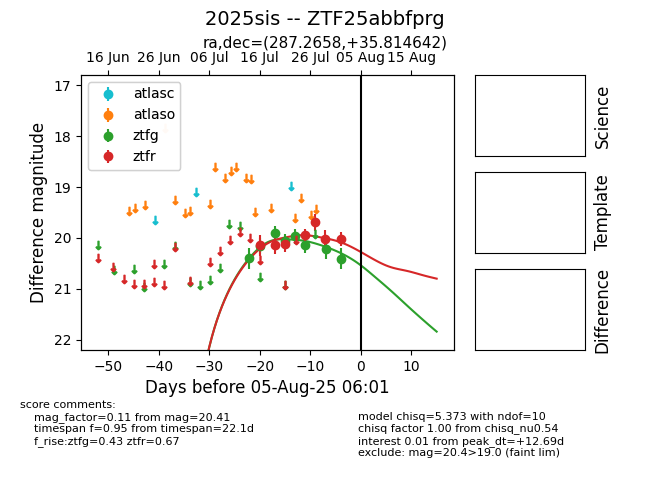

Target 2025sis at 2025-08-05 06:01, see:
FINK: fink-portal.org/2025sis
Lasair: lasair-ztf.lsst.ac.uk/objects/2025sis
ALeRCE: alerce.online/object/2025sis
TNS: wis-tns.org/object/2025sis
YSE: ziggy.ucolick.org/yse/transient_detail/2025sis
alt names
ZTF25abbfprg (ztf,fink)
2025sis (tns,yse)
coordinates:
equatorial (ra, dec) = (287.2658,+35.81464)
galactic (l, b) = (67.1188,+12.20315)
photometry
last ztfg=20.41, ztfr=20.02
8 ztfg, 7 ztfr detections
